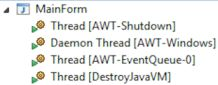
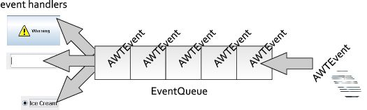
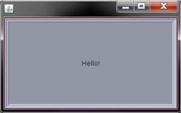
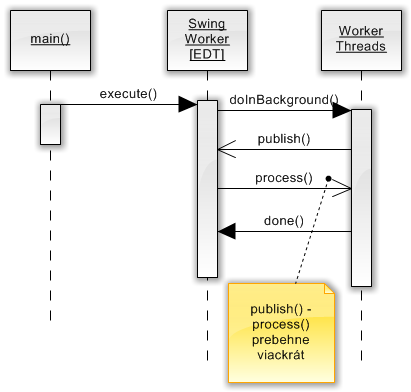
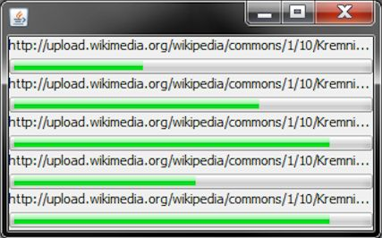

Úvod
Jednou zo základných požiadaviek používateľského rozhrania je jeho responsiveness, teda včasná a rýchla reakcia na používateľov vstup (teda zadávanie z klávesnice, kliky myšou atď.) Rozhranie, ktoré nedokáže reagovať včas, používateľa frustruje, pretože tempo svojej práce musí prispôsobovať počítaču a začne mať dojem, že program ho v práci zdržuje. Včas reagujúce používateľské rozhranie by malo spĺňať nasledovné požiadavky:
- umožniť používateľovi vidieť aktuálny stav aplikácie
- dať na vedomie, že jeho vstup bol prijatý
- v prípade, že aplikácia rieši dlhotrvajúcu úlohu, dávať na známosť priebežný stav a nebudiť dojem, že zamrzla
- ovplyvňovať beh programu (zatvoriť ho, pozastaviť atď.).
Pri vývoji swingovských aplikácii, ktoré spĺňajú vyššieuvedené zásady, sa nevyhneme použitiu vlákien a iných vlastností konkurentného programovania. Hoci sa to na prvý pohľad môže zdať pomerne odstrašujúce (konkurentné programovanie v sebe nesie potenciál ťažko odladiteľných chýb), v skutočnosti máme k dispozícii množstvo nápomocných tried a metód, ktoré prácu uľahčia.
Zmýšľanie pri grafických aplikáciách
Pri používaní klasických konzolových aplikácií používateľ uvažuje lineárne: aplikácia si od neho postupne vyžaduje údaje, ktoré sú do nej postupne zadávané z klávesnice.
Enter username:
> novotnyr
New UNIX password:
> ******
Retype new UNIX password:
> ******
passwd: all authentication tokens updated successfully.
V prípade grafických aplikácii sa však spôsob zmýšľania mení – a to nielen na strane používateľa, ale i na strane vývojára.
Aplikácia musí reagovať na udalosti, ktoré používateľ vyvoláva na jej ovládacích prvkoch, a v závislosti na nich aktualizovať a prekresľovať používateľské rozhranie.
Kritickým problémom sú dlhotrvajúce operácie: kým v konzolovej aplikácii
stačí vypísať „Prosím
čakajte...“ a o prekresľovanie sa starať netreba (všetky dáta sú už
totiž zobrazené), v grafickom používateľskom rozhraní je situácia presne
opačná. Ak aplikácia vykonáva tiahly výpočet, nesmie zabudnúť na
spracovávanie používateľovho vstupu a následné prekresľovanie, pretože
v opačnom prípade získa používateľ mylný pocit, že program vytuhol a
treba ho násilne ukončiť.
Vlákna v Swingu
Kým bežná konzolová aplikácia v Jave si vystačí s jediným vláknom (tzv. main), swingová aplikácia po spustení vytvorí viacero vlákien, ktoré sú zodpovedné za prekresľovanie, vybavovanie udalostí a ich rozosielanie jednotlivým event handlerom (teda kódu obsluhy udalostí) a ďalšie nízkoúrovňové operácie. Vlákna v typickej aplikácii sú zobrazené na nasledovnom obrázku:

Zo všetkých vlákien v swingovskej aplikácii sú však najdôležitejšie dve:
main: Inštancie ľubovoľného swingovského okna z neho automaticky naštartujú ostatné nízkoúrovňové vlákna (AWT-Shutdown, AWT-Windows) a vlákno EDT.
event dispatch thread: najdôležitejšie vlákno, ktoré je zodpovedné za spracovávanie udalostí a delegovanie udalostí pre ich obsluhu, ktorá sa nachádza v jednotlivých komponentoch.
Event Dispatch Thread (EDT)
Predstavme si kód z jednoduchej aplikácie, kde vytvoríme tlačidlo
JButton a priradíme mu obsluhu udalosti, ktorá nastane po kliknutí
naň: Kód v rámci metódy actionPerformed() predstavuje obsluhu
udalostí (event handler).
Čo sa stane po kliknutí myšou?
Vlákno EDT v sebe obsahuje tzv. front udalostí (event queue).
Akákoľvek akcia, ktorú vyvolá používateľ v používateľskom rozhraní –
či už pohyb myšou, kliknutie, stlačenie klávesy atď – spôsobí
vytvorenie objektu udalosť (v skutočnosti potomkovia triedy AWTEvent,
to však nie je dôležité) a jeho zaradenie na koniec tohto frontu.
Z jeho opačného konca EDT postupne vyberá jednotlivé objekty udalostí a rozposiela ich do jednotlivých komponentov, ktoré ich ďalej posielajú do svojich event handlerov, resp. listenerov. Tu však platí dôležitá a kritická zásada: objekt udalosti je z frontu vybratý až potom, čo dobehne kód v event handleri (listeneri), ktorý obslúži predošlú udalosť.

Z tejto dôležitej zásady vyplýva prvé dôležité pravidlo pri práci so Swingom:
Warning
V EDT nikdy nevykonávajte dlhotrvajúce operácie!
Ukážme si príklad, čo sa stane, ak to nedodržíme. Predstavme si kód v listeneri tlačidla, ktorý vykonáva dlhotrvajúcu operáciu, napríklad výpočet najväčšieho prvočísla.
JButton button = new JButton("Hello!");
button.addActionListener(new ActionListener() {
public void actionPerformed(ActionEvent e) {
/* dlhotrvajúci výpočet... */
stiahniSúbor("http://en.wikipedia.org/wiki/File:Java_logo.svg");
}
});
add(button);Po kliknutí na príslušný gombík sa do frontu udalostí zaradí nová
inštancia udalosti ActionEvent. Po spracovaní udalostí, ktoré sú pred
ňou, sa dostane na začiatok frontu. EDT ju z frontu vyberie, a pošle
príslušnému komponentu (teda gombíku button), ktorý ju odošle do
svojho action listenera. Ten vykoná kód vo svojej metóde
actionPerformed(), a po jeho dobehnutí umožní vláknu EDT spracovať
ďalšie udalosti vo fronte.
Kód v tejto metóde však predstavuje kritický bod: kým beží vyhľadávanie najväčšieho prvočísla, nemôže prebiehať spracovanie udalostí vo fronte. Z toho vyplýva doslova viditeľný dôsledok: používateľské rozhranie „vytuhne“. Ak je pozastavené spracovanie udalostí, neprebieha ani prekresľovanie používateľského rozhrania a používateľ začne byť nervózny.

Predošlý obrázok ukazuje príklad zamrznutého používateľského rozhrania. Používateľ stlačil tlačidlo, začal sa vykonávať action listener, ale prekresľovanie ustalo – rozbehne sa až po dobehnutí kódu v listeneri. Všimnime si negatívny dôsledok: tlačidlo ostalo zobrazené v medzistave, teda v stave „používateľ stlačil tlačidlo myši“. Nervózny používateľ zrejme začne „zbesilo“ klikať do okna, prípadne sa snažiť ukončiť aplikáciu, lenže jeho pokusy budú márne. Každý klik, či posun myši len vyvolá ďalšiu udalosť, ktorá sa zaradí na koniec frontu udalostí. Ich spracovanie je však pozastavené; čaká sa totiž na dobehnutie action listenera.
Morálne ponaučenie sme už spomenuli: dlhotrvajúce operácie nesmú prebiehať v EDT, inak zablokujú spracovávanie udalostí. Z toho však vyplýva ešte jeden dôsledok, ktorý budeme musieť brať do úvahy v druhej časti pravidiel pre prácu so Swingom:
Warning
Kód v listeneroch komponentov vždy beží v rámci vlákna EDT.
Dlhotrvajúce úlohy v Swingu
Riešenie pomocou SwingWorkera
Jedným z tradičných spôsobov, ktorými možno riešiť beh dlhotrvajúcich
úloh bez toho, aby sme narušili prekresľovanie používateľského
rozhrania, je použitie triedy SwingWorker.
SwingWorker je veľmi flexibilná trieda, ktorá umožňuje elegantne
riešiť typické úlohy pri práci s viacerými vláknami v Swingu.
- spustenie dlhotrvajúcej úlohy bez zablokovania frontu EDT a teda zastavenia prekresľovania používateľského rozhrania
- podpora dlhotrvajúcich úloh, ktoré vracajú výsledok
- priebežná aktualizácia používateľského rozhrania
- možnosť zistiť, či úloha ešte stále beží alebo či už bola dokončená
- zrušenie behu dlhotrvajúcej úlohy
Táto trieda je od JDK 6 priamo k dispozícii. Pre predošlé verzie Javy je
dostupná v podobe dodatočného projektu zo stránok
dev.java.net. Ak chceme vytvoriť
SwingWorker, ktorý spustí sťahovanie súboru mimo vlákna EDT, vieme
použiť nasledovnú konštrukciu:
SwingWorker<Void, Void> swingWorker = new SwingWorker<Void, Void>() {
@Override
protected Void doInBackground() throws Exception {
stiahniSúbor(
"http://en.wikipedia.org/wiki/File:Java_logo.svg");
return null;
}
};
swingWorker.execute();Základom filozofie je vytvoriť novú inštanciu SwingWorker-a. Táto
trieda používa dva generické parametre, ktoré pôsobia pomerne šokujúco,
ale umožňujú dodržať typovú kontrolu.
Prvý parameter v generiku určuje
návratovú hodnotu metódy doInBackground(). (V našom prípade nevracia
nič).
Druhý parameter určuje dátový typ objektov prehadzovaných medzi
metódami publish() a process(). O oboch metódach sa podrobnejšie
zmienime v ďalších sekciách.
Po vytvorení inštancie potrebujeme prekryť niektoré z metód, a nakoniec
spustiť vykonávanie pomocou metódy execute().
Kód v metóde doInBackground() sa spustí asynchrónne, teda v samostatnom
vlákne mimo EDT, čo presne spĺňa zásadu o neblokovaní prekresľovania.
Návratový typ tejto metódy sa musí zhodovať s generickým typom uvedeným
pri konštrukcii SwingWorkera. V prípade, že nevraciame žiadny objekt,
môžeme s výhodou využiť dátový typ Void (s veľkým „V“!). Kvôli
syntaktickým obmedzeniam však i v tomto prípade musíme vrátiť nejakú
návratovú hodnotu, teda null.

Vytváranie a spustenie SwingWorkera, ktoré vykoná dlhotrvajúcu
operáciu, je možné vložiť do kódu metódy actionPerformed() v action
listeneri.
V prípade, že je SwingWorker komplexnejší a plánuje sa jeho použitie v
rámci volania action listenera, môžeme vytvoriť samostatnú triedu, ktorá
bude dediť od SwingWorkera a implementovať interfejs ActionListener:
public class DownloadActionListener extends SwingWorker<Void, Void>
implements ActionListener
{
private URL url;
public DownloadActionListener(String url) {
try {
this.url = new URL(url);
} catch (MalformedURLException e) {
throw new IllegalArgumentException(
"Illegal protocol in URL.", e);
}
}
public DownloadActionListener(URL url) {
this.url = url;
}
protected Void doInBackground() throws Exception {
// dlhý výpočet
return null;
}
public void actionPerformed(ActionEvent e) {
new DownloadActionListener(url).execute();
}
}Metóda actionPerformed() následne vytvorí novú inštanciu SwingWorkera
a spustí ju, teda je ekvivalentná volaniu metódy execute(). Pridanie
asynchrónnej akcie do tlačidla je potom jednoduché:
button.addActionListener(
new DownloadActionListener(
"http://en.wikipedia.org/wiki/File:Java_logo.svg"))Táto technika je prehľadná, hoci má drobnú nevýhodu vo viacnásobnom
vytváraní inštancie SwingWorkera (keďže s každým volaním
metódy actionPerformed() sa vytvárajú nové inštancie). Žiaľ, iný spôsob
nie je možný, lebo inštanciu SwingWorkera nemožno spúšťať opakovane
(podrobnosti pozri sekcia Opakované úlohy).
Zistenie, či úloha dobehla
Kód pre preberanie súboru má jednu značnú nevýhodu: používateľ vonkoncom
netuší, v akom stave je jeho priebeh, pretože používateľské rozhranie
nedáva na známosť, či preberanie ešte stále beží alebo už skončilo.
SwingWorker dáva k dispozícii metódu done(), ktorú možno prekryť a
realizovať v nej kód, ktorý sa má vykonať po dobehnutí operácie v
doInBackground(). Typickým príkladom je aktualizácia používateľského
rozhrania, napr. zmenou textu v nejakom popisku label.
public class DownloadActionListener extends SwingWorker<Void, Void>
implements ActionListener
{
private JLabel label;
public DownloadActionListener(String url, JLabel labe) {
//...
}
// ...
protected void done() {
label.setText("Hotovo.");
}
}Important
Kým kód v metóde
doInBackground()beží asynchrónne, metódadone()sa naopak vykonáva v rámci EDT. Kód v nej by mal prebehnúť čo najrýchlejšie, aby nebrzdil prekresľovanie.
Alternatívny spôsob využíva možnosť sledovania zmien vlastností
(properties) v JavaBeanoch. SwingWorker umožňuje sledovať zmeny
svojich properties, a jednou z nich je status. Ak zaregistrujeme na
SwingWorkeri inštanciu triedy PropertyChangeListener, kde zistíme,
či vlastnosť status má hodnotu DONE, vieme následne aktualizovať
používateľské rozhranie.
swingWorker.addPropertyChangeListener(new PropertyChangeListener() {
public void propertyChange(PropertyChangeEvent event) {
if ("state".equals(event.getPropertyName())
&& SwingWorker.StateValue.DONE == event.getNewValue()) {
label.setText("Hotovo.");
}
}
});Tento druhý spôsob umožňuje striktnejšie oddeliť funkcionalitu
SwingWorkera od samotných komponentov používateľského rozhrania, hoci
na úkor komplexnosti.
Important
Kód v obsluhe udalostí (teda v listeneroch) vždy beží vo vlákne EDT. Túto vlastnosť možno využiť pri modifikovaní stavu komponentov.
Aktualizácia komponentov počas behu úlohy
Metóda done() slúži na notifikáciu ukončenia úlohy. Ako však informovať
o priebežnom stave? Zoberme si kus kódu, ktorý začne sťahovať dáta z
webovej adresy:
protected Void doInBackground() throws Exception {
//...
InputStream stream = ...
BufferedOutputStream out = ...
int b = -1;
int progress = 0;
while((b = stream.read()) != -1) {
out.write(b);
// priebežne aktualizujeme UI
aktualizujUI(progress, contentLength);
}
// ...
}Po zapísaní bajtu môžeme aktualizovať používateľské rozhranie –
napríklad môžeme využiť „teplomer“ v podobe JProgressBar, ktorý
dokáže zobraziť percentuálny stav úlohy. Ak poznáme dĺžku sťahovaného
súboru, percentuálny progres vieme odvodiť
nasledovne:
progressBar.setValue((int) (((double) progress / (double) contentLength) * 100));Samozrejme, to predpokladá, že SwingWorker má inštančnú premennú s
progress barom, ktorú sme doň vopred dodali.
Pretypovávacie vúdú je potrebné kvôli celočíselnému deleniu: delenie
dvoch intov vedie k intu, čo má dôsledky v podobe výpočtu 2 / 3 == 0.
Metóda aktualizujUI() by mohla vyzerať nasledovne:
private void aktualizujUI(double progress, double length) {
int percents = (int) ((progress / contentLength) * 100);
progressBar.setValue(percents);
}Uvedený kus kódu je na prvý pohľad korektný, ale je v ňom jedna zásadná
chyba, ktorá súvisí s prácou so swingovskými vláknami. Metóda
doInBackground(), ako už bolo viackrát zmienené, beží v samostatnom
vlákne. V tom istom vlákne bežia aj metódy, ktorá sú z nej volané –
teda i naša metóda aktualizujUI(), v ktorej aktualizujeme stav progress
baru. V Swingu však platí dôležitá zásada:
Warning
Stav swingovských komponentov možno meniť len z vlákna EDT!
Toto je druhá a posledná kritická zásada práce so Swingom. Jej ignorovanie nevedie k syntaktickým chybám, a aplikácia zrejme pobeží. Skôr či neskôr, a hlavne v kritických situáciách, sa môže prejaviť nečakaným správaním, ktoré sa môže prejaviť nesprávnym prekresľovaním komponentov či iným čudným správaním.
Metóda aktualizujUI() túto zásadu ignoruje, pretože nebeží v rámci EDT.
Ako to však opraviť?
V samotnej podstate tu ide o problém odovzdávania dát medzi vláknami a
ich koordinácie. V bežnom konkurentnom programovaní je to nepríliš ľahká
úloha. SwingWorker však poskytuje elegantnú možnosť, ako to dosiahnuť
bez väčších ťažkostí.
Note
V Swingu existuje niekoľko málo metód komponentov, ktoré sú thread-safe, teda možno ich bezpečne volať aj z iného vlákna než EDT. Je však smutným faktom, že i v prípade, že je v dokumentácii uvedená thread-safety, realita tomu nezodpovedá. Z tohto dôvodu je lepšie vždy a všade dodržiavať zásadu o modifikácii komponentov len z vlákna EDT, aj keď to podľa dokumentácie nie je nutné. V konečnom dôsledku to však nie je až také obmedzenie, keďže počet dokumentovaných thread-safe metód je pomerne malý.
Metóda publish()
Základnou metódou, ktorou možno odoslať dáta do vlákna EDT, je
publish(), ktorá umožňuje odoslať do EDT dáta uvedené v jej parametroch.
Dátový typ parametra je špecifikovaný v druhom generickom argumente
uvedenom pri vytváraní inštancie SwingWorkera.
Metóda process()
Dáta, ktoré sme odoslali do EDT použitím publish(), si môžeme vyzdvihnúť
v rámci metódy process(). Tá beží v rámci vlákna EDT, a teda je vhodným
miestom, kde môžeme aktualizovať komponenty bez toho, aby sme porušili
vyššieuvedenú zásadu. Táto metóda má svojskú signatúru:
protected void process(List<Integer> chunks)Jej parametrom je zoznam, ktorý obsahuje prvky toho typu, ktorý bol
deklarovaný v generickom argumente, resp. v parametri metódy publish().
V zozname sa ocitnú všetky publikované dáta. Za normálnych okolností
by sa dalo čakať, že každé volanie publish() je spárované s volaním
process(), ale kvôli efektivite volaní môže SwingWorker zlúčiť
niekoľko publikovaných dát do jedného volania metódy process().
Prirodzene, žiadne publikované dáta sa nestratia – objavia sa v zozname
chunks v takom poradí, v akom boli publikované do EDT.
Zoskupovanie volaní
V dokumentácii sa udáva príklad zoskupovania viacerých volaní:
publish(123);
publish(860);
publish(2320);Tieto volania môžu vyústiť v jediné volanie process(), kde bude zoznam chunks obsahovať prvky 123, 860 a 2320.
Metóda publish() tiež podporuje odosielanie viacerých parametrov
naraz. V niektorých situáciách môžeme teda odoslať rovno
publish(123, 860, 2320) – samozrejme, v našom príklade sledovania
priebehu to nemá zmysel.
Sledovanie priebehu
Ak sledujeme priebeh, bude nás zaujímať len posledná publikovaná hodnota, teda posledný prvok zoznamu. V rámci metódy vypočítame percento priebehu a nastavíme ho na zozname.
protected void process(List<Integer> chunks) {
double progress = chunks.get(chunks.size() - 1);
progressBar.setValue((int) (progress / contentLength) * 100));
}SwingWorker a sledovanie priebehu
Ak chceme priebežne sledovať percentuálny priebeh úlohy, môžeme tiež
použiť alternatívny spôsob, ktorý využíva metódu setProgress()
zabudovanú v SwingWorkeri. Má jeden parameter v intervale 0..100, ktorý
vieme nastaviť property s názvom progress.
protected Void doInBackground() throws Exception {
//...
while((b = stream.read()) != -1) {
// .. priebežne publikujeme progres
setProgress(percentProgress);
}
// ...
}Zmenu stavu možno sledovať zaregistrovaním inštancie
PropertyChangeListener na inštancii SwingWorkera.
Blokovanie EDT v prípade dlhotrvajúcej operácie
V niektorých prípadoch chceme vykonať dlhotrvajúcu operáciu tak, aby
používateľ musel vyslovene počkať na výsledok. Chceme mu zabrániť v
používaní grafického rozhrania, ale zároveň chceme predísť vytuhnutiu
aplikácie. Dokumentácia k SwingWorkeru v tomto prípade radí trik,
ktorý využíva modálne okno.
Vo vlákne EDT vytvoríme inštanciu modálneho okna, spustíme SwingWorker
a toto okno (modálne okno „vyblokuje“ používateľské rozhranie). Zároveň
však budeme v property change listeneri priebežne sledovať, či ešte
operácia beží. Ak už dobehla, okno zatvoríme. Zmienený property change
listener vyzerá nasledovne a podobá sa na listener zo sekcie Úloha dobehla.
private final class SwingWorkerCompletionWaiter
implements PropertyChangeListener
{
private JDialog dialog;
public SwingWorkerCompletionWaiter(JDialog dialog) {
this.dialog = dialog;
}
public void propertyChange(PropertyChangeEvent event) {
if ("state".equals(event.getPropertyName())
&& SwingWorker.StateValue.DONE == event.getNewValue()) {
dialog.setVisible(false);
dialog.dispose();
}
}
}Použitie na príklade action listenera je nasledovné:
button.addActionListener(new ActionListener() {
public void actionPerformed(ActionEvent e) {
SwingWorker<Void, Void> worker = ...
JDialog dialog = new JDialog(MainForm.this, true);
worker.addPropertyChangeListener(
new SwingWorkerCompletionWaiter(dialog));
worker.execute();
dialog.setVisible(true);
}
});V tomto prípade treba dať pozor na správne poradie príkazov. Do
workera treba vložiť property change listener, ktorý však potrebuje
inštanciu modálneho JDialogu. Metóda execute() spustí asynchrónne
SwingWorker, čo sa musí udiať ešte pred zobrazením modálneho okna (v
opačnom prípade okno blokuje EDT).
SwingWorker ako úloha pre paralelné spustenie
Vyššie sme sa zmieňovali o metóde execute(), ktorá asynchrónne spustí
kód v metóde doInBackground(). V útrobách SwingWorkera sa udržiava
množina obslužných vlákien (typicky desiatich), ktorá automaticky
obsluhuje všetky workerovské úlohy.
Napriek tomu však existujú situácie, keď si chceme spúšťanie
SwingWorkera spravovať sami. SwingWorker je možné použiť v role bežnej
asynchrónne spúšťanej úlohy. Trieda implementuje interfejs
RunnableFuture, čím dokáže zároveň splniť rolu Runnable i Future.
SwingWorker a Thread
Implementovaním interfejsu Runnable je umožnené spúšťanie inštancie
SwingWorkera pomocou klasickej triedy vlákna Thread. Nasledovný kód
spustí vo vlákne Thread inštanciu workera presne tak, ako akúkoľvek
inú inštanciu Runnable:
SwingWorker<Void, Integer> worker = ...
Thread thread = new Thread(worker);
thread.start();Tento kód je zhruba ekvivalentný štandardnému spusteniu cez
worker.execute(). V tomto prípade však explicitne určíme vlákno, ktoré
bude spracovávať danú úlohu.
Note
Za normálnych okolností nie je veľmi dôvod používať túto metódu.
SwingWorker a exekútory
Keďže SwingWorker implementuje Runnable, možno ho zaslať do exekútora.
Táto možnosť má zmysel napr. v prípade, že chceme synchronizovať beh
viacerých vlákien. Predstavme si, že chceme zobraziť okno, ktoré má
viacero progress barov indikujúcich paralelné sťahovanie viacerých
súborov a po dokončení sťahovania sa automaticky zatvorí.

Tento problém vieme elegantne vyriešiť pomocou exekútora, teda inštancie
triedy ExecutorService. Doňho vieme odoslať viacero úloh, ktoré sa
spustia asynchrónne v samostatných vláknach. V tomto konkrétnom prípade
navyše vieme využiť metódu invokeAll(), ktorá blokuje dovtedy, kým
nedobehnú všetky úlohy. Inak povedané, spustíme úlohy, blokujeme a po
ich dobehnutí zatvoríme okno. Drobným nedostatkom je fakt, že
invokeAll() vyžaduje úlohu v podobe inštancie typu Callable. Našťastie,
volaním Executors.callable() vieme previesť Runnable na Callable.
setVisible(true);
try {
ExecutorService executor = Executors.newCachedThreadPool();
List<Callable<Object>> tasks
= new LinkedList<Callable<Object>>();
for (Component c : this.getContentPane().getComponents()) {
if (c instanceof DownloadProgressPanel) {
// panel s progress barom a popiskom
DownloadProgressPanel panel = (DownloadProgressPanel) c;
// vytvoríme inštanciu SwingWorkera
DownloadTask task
= new DownloadTask(panel.getUrl(),
panel.getProgressBar());
// prevedieme ho na Callable a zaradíme do zoznamu úloh
Callable<Object> callable = Executors.callable(task);
tasks.add(callable);
}
}
// vykonáme všetky úlohy. Volanie metódy čaká, kým nedobehnú úlohy.
executor.invokeAll(tasks);
} catch (InterruptedException e) {
e.printStackTrace();
} finally {
setVisible(false);
}Opakované úlohy
V prípade, že sa snažíme pustiť úlohu reprezentovanú SwingWorkerom
opakovane, treba dať pozor na jednu významnú zásadu.
Warning
Inštanciu
SwingWorkera možno spustiť len raz.
Táto vlastnosť v podstate zabraňuje opakovanému spúšťaniu úloh.
Ostatné nástroje pre práce s vláknami v Swingu
SwingWorker je skutočne rafinovaná trieda, ktorou dokážeme vyriešiť
veľa problémov. Napriek tomu sa môže v zriedkavých prípadoch stať, že
si potrebujeme poradiť aj bez neho. Príkladom môže byť kód vykonávaný v
rámci vlákna, ktorý chce aktualizovať swingovské komponenty. Pravidlo v
Swingu tvrdí, že to možno robiť len v rámci EDT, čo sa v rámci
SwingWorkera dialo v metóde process(), resp. done().
Nízkoúrovňové volanie využíva metódu SwingUtilities.invokeLater(),
ktorá vie zobrať parameter typu Runnable, predstavujúci úlohu. Po
zavolaní tejto metódy sa úloha Runnable zaradí na koniec radu v EDT, čo
zaručí vykonanie kódu vo vlákne EDT a teda možnosť meniť komponenty.
Úloha potom beží asynchrónne.
Podotknime, že zavolanie metódy invokeLater() môžeme vykonať z
ľubovoľného vlákna (aj z EDT). V prípade, že ho voláme z vlákna EDT,
sa kód v úlohe Runnable vykoná až potom, čo sa spracujú ostatné úlohy
čakajúce vo fronte EDT. Niekedy sa oplatí vedieť, či vykonávaný kód
beží v EDT alebo nie, čo zistíme nasledovne:
boolean smeVoVnutriEDT = SwingUtilities.isEventDispatchThread()Doplnkom metódy invokeLater() je SwingUtilities.invokeAndWait(), ktorý
funguje rovnako, ale blokuje do chvíle, kým nedobehne úloha odoslaná do
EDT.
Sumár
Programovanie svižného používateľského rozhrania v Swingu má svoje
úskalia. Trieda SwingWorker ich však v mnohom dokáže maximálne
uľahčiť. Najdôležitejšou zásadou je nezabúdať na niekoľko zásad.
Žiaľ, ak ich nedodržíme, žiadne IDE nás na to neupozorní a už zo
povahy konkurentného programovania vyplýva, že chyby, ktoré z toho
vyplynú, sa ladia extrémne ťažko.
Dlhotrvajúce úlohy vykonávajte mimo EDT!
Modifikácia komponentov sa musí udiať v rámci EDT!
Netreba však zabúdať ani na bočné zásady:
Kód v listeneroch komponentu beží v rámci EDT.
SwingWorkermožno spustiť len raz.
Alexander Potočkin navrhuje niekoľko spôsobov, ktorými možno overiť dodržanie nasledovných zásad. Väčšinou však používajú intenzívne Java vúdú, či dokonca aspektovo orientované programovanie, a hodia sa len pre ladiace účely, keďže dramaticky ovplyvňujú výkon. Idey sú zhrnuté v jeho blogu na java.net.
Často nastáva otázka, prečo niekto nevytvorí mechanizmus, ktorým sa kód automaticky vykoná mimo EDT? Podľa Potočkina to je síce technicky možné, ale len za cenu čiernej mágie založenej na generovaní kódu sa behu, resp. aspektovo orientovanom programovaní, ktoré má opäť vplyv na výkon. Úvahy zhrnul v samostatnom článku Debugging Swing Summary na java.net.
Sumár metód SwingWorkera
| Metóda | Význam | Beží v |
|---|---|---|
new SwingWorker<V, W> |
V: návratový typ done(), W: parameter v publish() |
V rámci vlákna, z ktorého sa volal tento konštruktor. |
doInBackground() |
Umiestnenie kódu, ktorý má bežať asynchrónne mimo EDT. | mimo EDT |
done() |
kód sa vykoná po dobehnutí metódy doInBackground() |
EDT |
publish(W...) |
odošle parameter typu W do EDT | - |
process(List<W>) |
spracováva výsledky odoslané z metódy publish() | EDT |
Zdroje
- Viď http://developer.kde.org/documentation/books/kde-2.0-development/ch09.html.
- Dokumentácia k SwingWorkeru
- Swing Threads, článok na mindprod.com
- Threads and Swing, článok o zásadách používania vlákien v Swingu
- Swing Threads, článok na mindprod.com: